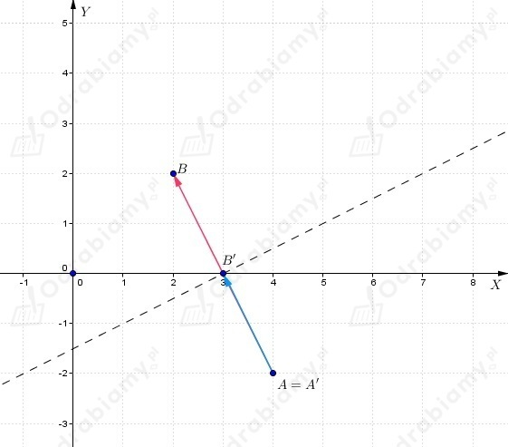
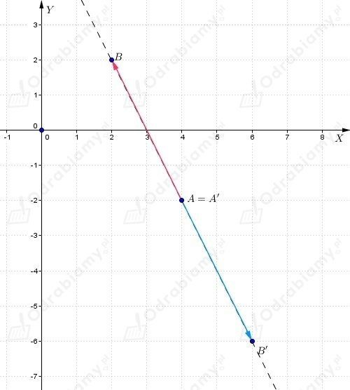
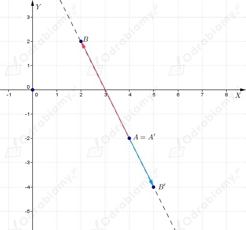
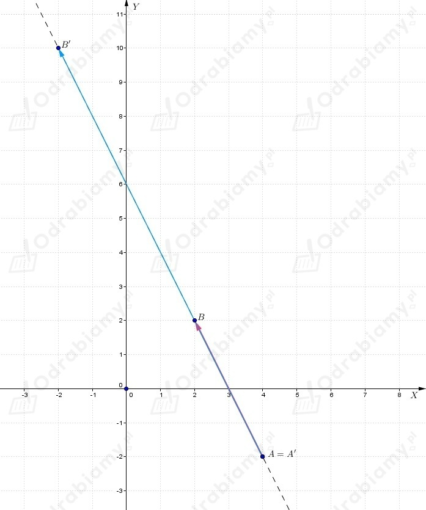
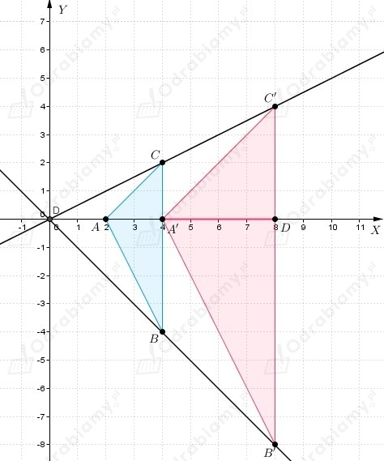
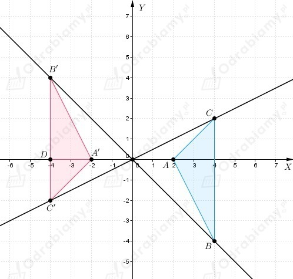
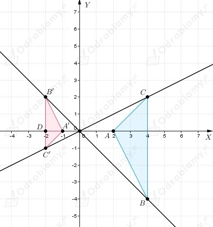
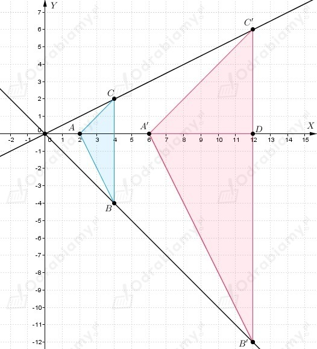

| Jednokładnością o środku O i skali k≠0 nazywamy przekształcenie, które każdemu punktowi P płaszczyzny przyporządkowuje punkt P' taki, że
Obrazem odcinka AB w jednokładności o skali k jest odcinek A'B' równoległy do odcinka AB taki, że
|
a)
Należy narysować obraz odcinka AB w jednokładności o środku O(0, 0) i skali

b)
Należy narysować obraz odcinka AB w jednokładności o środku O(0, 0) i skali

c)
Należy narysować obraz odcinka AB w jednokładności o środku O(0, 0) i skali

d)
Należy narysować obraz odcinka AB w jednokładności o środku O(0, 0) i skali

Z treści zadania wiemy, że
a)

b)

c)

d)
